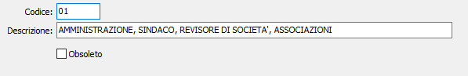

Codici attività Inps
La tabella contiene i codici di attività INPS che servono per la compilazione dei modelli GLAD. Poiché una stessa aliquota contributiva si applica a diverse tipologie di lavoratori autonomi, la specificazione del codice attività consente di precisare il titolo del contributo e determina il congruo raggruppamento dei contributi versati a favore di un singolo percipiente.
Il codice di attività viene acquisito nel singolo movimento di compenso a terzi perché, per quanto improbabile, potrebbe avvenire che lo stesso lavoratore autonomo effettui prestazioni a diverso titolo. Sostanzialmente la tabella si giustifica per consentire all’utente di individuare il corretto titolo di ciascun pagamento.

CODICE: codice alfanumerico di 2 caratteri, corrispondente alla codifica INPS, che definisce l’attività in esame. Sul campo sono attive le funzioni di vista sulla tabella stessa.
DESCRIZIONE: campo alfanumerico per descrivere l’attività.
CODICI ATTUALI:
01 - AMMINISTRAZIONE, SINDACO, REVISORE DI SOCIETÀ, ASSOCIAZIONI ED
02 - AMMINISTRATORE DI CONDOMINIO.
03 - ARCHIVIAZIONE, TRADUZIONE, SERVIZI AMMINISTRATIVI CONTABILI
04 - ASSISTENZA TECNICA, MACCHINARI,IMPIANTI, COLLAUDI, CERTIFICAZIONI
05 - COLLABORAZIONE A GIORNALI, RIVISTE, ENCICLOPEDIE E MEZZI DI COMUNICAZIONE
06 - CONSULENZE AZIENDALI, FISCALI, AMMINISTRATIVE, CONTABILI
07 - ESTETICA, IGIENE IN GENERE.
08 - FORMAZIONE, ISTRUZIONE, ADDESTRAMENTO.
09 - INTERMEDIAZIONE, RECUPERO CREDITI, NOTIFICA ATTI, ECC.
10 - MODA, ARTE, SPORT, SPETTACOLO.
11 - PARTECIPANTI A COLLEGI E COMMISSIONI.
12 - SALUTE, ASSISTENZA.
13 - SONDAGGI DI OPINIONE, MARKETING E TELEMARKETING, PUBBLICITÀ
14 - TRASPORTI E SPEDIZIONE.
15 - TURISMO, ANIMAZIONE, INTRATTENIMENTO, MOSTRE, MERCATI.
16 - VENDITE A DOMICILIO
17 - ALTRE